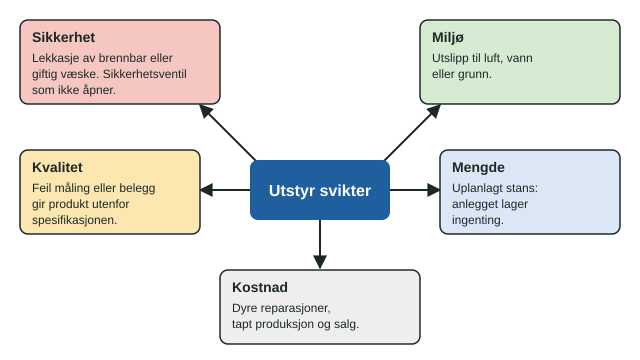

Hvorfor vedlikehold?
Pumper, ventiler, rør og instrumenter slites hver dag anlegget går. Blir ingenting gjort, svikter de før eller senere, ofte på det verste tidspunktet. Vedlikehold holder utstyret i stand, slik at anlegget går sikkert, rent og uten uplanlagte stopp.
Hva er vedlikehold?
Vedlikehold er arbeid som holder utstyret i god stand, eller reparerer det når det svikter. Det er to slags arbeid:
- Holde i stand: se over, smøre, rengjøre, stramme, justere og bytte deler som er slitt, før utstyret svikter.
- Reparere: finne feilen og sette utstyret i stand igjen når det har sviktet.
Begge deler hører med. På siden Hva er drift? så du at drift er å kjøre anlegget. Vedlikehold er å passe på utstyret som anlegget kjøres med.
Alt utstyr slites
Selv det beste utstyret blir dårligere med tiden. De vanligste årsakene er:
- Slitasje: Deler som beveger seg mot hverandre, slites ned. Det gjelder for eksempel lager, tetninger, pumpehjul og ventilseter. Partikler i væsken sliter ekstra mye.
- Korrosjon: Vann, luft og kjemikalier bryter sakte ned metallet, slik at veggen i rør og tanker blir tynnere.
- Belegg og tilstopping: Kalk, rust og andre stoffer legger seg på innsiden av rør, siler og varmevekslere. Da går det mindre væske gjennom, og varmen overføres dårligere.
- Aldring: Pakninger og slanger av gummi og plast blir harde og sprekker. Smøreolje mister evnen til å smøre.
- Vibrasjon og varme: Bolter løsner, og metall som blir varmet opp og avkjølt om og om igjen, kan få sprekker.
Slitasjen kan ikke stoppes helt. Men den kan bremses, og den kan oppdages i tide. Det er det vedlikehold handler om.
Hva skjer når utstyret svikter?
Når utstyr plutselig svikter og slutter å virke, kalles det et havari. Et havari rammer de samme fem målene som drift skal nå: sikkerhet, miljø, kvalitet, mengde og kostnad.

- Sikkerhet: En pakning som lekker brennbar væske, kan gi brann. Et rør som revner, kan sprute varm syre.
- Miljø: Lekkasjer og et renseanlegg som ikke virker, gir utslipp utover det bedriften har lov til.
- Kvalitet: En måler som viser feil, eller en varmeveksler med belegg, kan gi produkt som ikke holder spesifikasjonen.
- Mengde: Stopper en viktig pumpe uten at det finnes en reservepumpe, kan hele anlegget stoppe. Det kalles en uplanlagt stans.
- Kostnad: En liten feil som får utvikle seg, ødelegger ofte mer utstyr. Reparasjonen blir dyr, og bedriften taper salg mens anlegget står.
Regneeksempel: planlagt eller uplanlagt?
Oppgave: En pumpe har ingen reservepumpe. Lageret i pumpa er slitt. Sammenlign hva det koster å
- A: bytte lageret ved neste planlagte stopp, når anlegget likevel står
- B: kjøre videre til lageret havarerer. Da blir også akselen og tetningen ødelagt, og anlegget står i 10 timer.
Tallene er tenkte, men av en realistisk størrelse:
- Arbeid koster 800 kr per time.
- A: nytt lager koster 4 000 kr, og jobben tar 4 timer.
- B: nye deler koster 45 000 kr, og jobben tar 10 timer. Anlegget står mens jobben gjøres.
- Anlegget lager 4 tonn produkt i timen. For hvert tonn som ikke blir laget, taper bedriften 1 500 kr.
Løsning:
- A, planlagt: deler 4 000 kr + arbeid 4 h · 800 kr/h = 3 200 kr. Anlegget står likevel, så det er ikke noe tapt produksjon. Sum: 7 200 kr.
- B, havari: deler 45 000 kr + arbeid 10 h · 800 kr/h = 8 000 kr.
- Tapt produksjon: 10 h · 4 tonn/h = 40 tonn. 40 tonn · 1 500 kr/tonn = 60 000 kr.
- Sum for B: 45 000 kr + 8 000 kr + 60 000 kr = 113 000 kr.
Svar: Havariet koster omtrent 16 ganger så mye som det planlagte byttet (113 000 kr / 7 200 kr ≈ 16). I tillegg kan et lager som havarerer, gi gnister, lekkasje og fare for folk.
Sikkerhetsutstyr må også vedlikeholdes
Noe av det viktigste utstyret i anlegget brukes nesten aldri. Det gjelder for eksempel sikkerhetsventiler, gassdetektorer, nødstopp og brannpumper. De er barrierer som skal stoppe en farlig hendelse.
Svikter en pumpe som går hele tiden, merker du det med en gang. Svikter en sikkerhetsventil, merker ingen noe før den trengs, og da er det for sent. En slik feil kalles en skjult feil. Derfor må sikkerhetsutstyr testes jevnlig, selv om det ser ut til å være i orden.
Hvem gjør vedlikeholdet?
I et stort anlegg har vedlikehold egne fagarbeidere: mekanikere tar pumper, ventiler og annet mekanisk utstyr, elektrikere tar motorer og strøm, og automatikere tar instrumenter og styresystemer.
Operatøren er også en viktig del av vedlikeholdet:
- Oppdager og melder: På runden er det ofte operatøren som merker en ny lyd, en lekkasje eller et lager som er varmt, og melder fra.
- Enkelt vedlikehold: Mange steder smører operatøren, fyller på olje, rengjør siler og bytter filtre etter faste rutiner.
- Gjør utstyret klart: Før en reparasjon stopper, tømmer og sikrer operatøren utstyret. Etterpå tar operatøren det i drift igjen.
Vedlikehold er også et krav. Lover og forskrifter krever at arbeidsutstyr holdes i forsvarlig stand, og noe utstyr, for eksempel trykktanker, skal kontrolleres med faste mellomrom.
- Vedlikehold er risikabelt arbeid. Mange alvorlige ulykker skjer når utstyr åpnes og repareres, ikke under vanlig drift. Utstyret skal være stoppet, tømt, trykkløst og sikret med lås og merk før noen begynner. Mer om dette står på siden Sikker jobbing ved vedlikehold senere i emnet.
- Meld fra om feil med en gang. En liten lekkasje eller en ny lyd er billig å rette i dag og kan bli et havari i morgen.
- Ikke reparer på egen hånd utstyr du ikke har opplæring og tillatelse til å arbeide på.
Tenk på bilen: Den har service, oljeskift og EU-kontroll med faste mellomrom, og du bytter dekk før de er helt slitt. Det er billigere og tryggere enn å vente til motoren stopper på motorveien. Et prosessanlegg vedlikeholdes etter den samme tanken.
På neste side lærer du om de ulike typene vedlikehold: å reparere når noe har sviktet, å skifte deler etter en fast plan, og å følge med på tilstanden til utstyret.
Test deg selv
1. Hva er vedlikehold?
- Å starte, overvåke og stoppe anlegget
- Arbeid som holder utstyret i god stand, eller reparerer det når det svikter
- Å bygge nytt utstyr når det gamle er slitt ut
Vedlikehold er både å holde utstyret i stand før det svikter, og å reparere det etterpå. Å starte, overvåke og stoppe anlegget er drift.
2. En varmeveksler kjøler produktet dårligere enn før, selv om det går like mye kjølevann gjennom den. Hva er den mest sannsynlige årsaken?
- Aldring av gummipakninger
- Belegg på innsiden, som gjør at varmen overføres dårligere
- Løse bolter på grunn av vibrasjon
Kalk, rust og andre stoffer som legger seg i varmeveksleren, virker som et isolerende lag. Da overføres varmen dårligere, og produktet blir ikke kjølt nok.
3. Hvorfor er det ofte mye billigere å bytte en slitt del ved et planlagt stopp enn å vente til den havarerer?
- Fordi delene er billigere når anlegget står
- Fordi et havari ofte ødelegger mer utstyr og gir tapt produksjon mens anlegget står
- Fordi det ikke trengs arbeidstillatelse ved et planlagt stopp
Ved et havari blir ofte flere deler ødelagt, reparasjonen tar lenger tid, og anlegget lager ingenting mens det står. I regneeksemplet kostet havariet omtrent 16 ganger så mye.
4. Hva er en skjult feil?
- En feil som vedlikehold prøver å holde hemmelig
- En feil som bare oppstår om natten
- En feil i utstyr som sjelden brukes, for eksempel en sikkerhetsventil, slik at ingen merker den før utstyret trengs
Sikkerhetsutstyr står stille det meste av tiden. Er det i stykker, merker ingen det før det skal virke. Derfor må det testes jevnlig.
5. På runden hører du at en pumpe har begynt å hvine. Hva gjør du?
- Ingenting, pumpa går jo fortsatt
- Åpner pumpa og ser etter selv
- Melder fra med en gang, slik at feilen kan rettes før pumpa havarerer
En ny lyd er ofte det første tegnet på at et lager eller en tetning er slitt. Meld fra, slik at vedlikehold kan rette feilen i tide. Du skal aldri åpne utstyr uten at det er stoppet, sikret og du har tillatelse.
Ordliste
| Begrep | Forklaring | Engelsk |
|---|---|---|
| vedlikehold | Arbeid som holder utstyret i god stand, eller reparerer det når det svikter. | maintenance |
| slitasje | At materiale gradvis gnis eller rives bort fra deler som beveger seg mot hverandre eller mot væske med partikler. | wear |
| havari | At utstyr plutselig svikter og slutter å virke, ofte slik at mer blir ødelagt. | breakdown |
| uplanlagt stans | At anlegget eller en del av det stopper uten at det var planlagt, for eksempel på grunn av et havari. | unplanned shutdown |
| skjult feil | En feil i utstyr som sjelden brukes, for eksempel en sikkerhetsventil, som ingen merker før utstyret trengs. | hidden failure |
Les mer
- Hva er drift?: de fem driftsmålene og hvordan drift og vedlikehold henger sammen.
- Hva er korrosjon?: hvorfor metall i anlegget brytes ned.
- Sveitserostmodellen: hvordan barrierer hindrer ulykker.
- Lås og merk (LOTO): hvordan utstyr sikres før vedlikehold.
Om kildene: Teksten, eksemplene og figurene på denne siden er laget for dette nettstedet. Siden bygger på undervisningsopplegg i kjemiprosess- og laboratoriefag ved Sauda vgs, som er utarbeidet med utgangspunkt i blant annet Kjemien stemmer, Laboranten og åpne nettkilder.